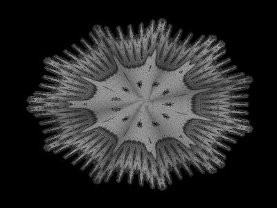
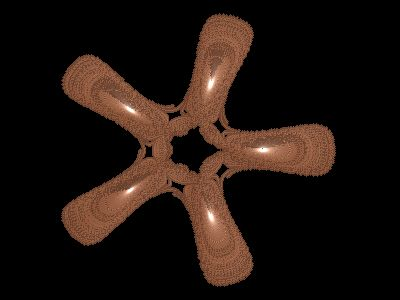
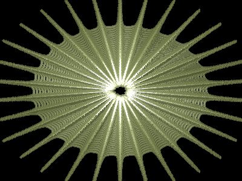

The Gumowski / Mira formula and
Simulation
By: Stephen C. Ferguson, January 25, 2000
A formula is named after the two Physicists (or mathematicians) that discovered it. Their names are Gumowski and Mira. They did experiments at the CERN research facility in Geneva Switzerland. They were trying to calculate (or simulate) the trajectories of elementary particles like protons that move at high speeds in an accelerator, a circular channel with the diameter of a tin can but several meters long. Gumowski and Mira used the formula to simulate the orbits of the particles.
One of the formulas that they used is as follows:
X(n+1) = B*Y + F(X)
Y(n+1) = -X + F(X(n+1))
The function "F" is considered their model. One of the main functions
they used for their model is:
F(X) = A*X + (1-A)*2*X*X/(1+X*X)
in which "A" is a parameter to be chosen freely and is usually anywhere in
the range of -1 to 1. "B" is a very sensitive constant and usually stays
at a value that is very close to 1.000. If the constant "B" is slightly
increased to a value of 1.001, then the trajectory will usually expand (or
spiral outward to infinity). If the constant "B" is slightly decreased to
something like a value of "0.999", then the trajectory will contract (or
spiral inward) towards the attractor points.
Another very important parameter is the initial starting point of the trajectory.
This is sometimes called the "Seed" value. The seed is represented
by the initial values of X and Y. Typical initial values of X and Y
can be somewhere in the range of -20 to 20.
For "A=1", F(x) reduces to X. The model (F) is then completly regular, all is stable, and chaos is absent. As A deviates more from 1, more chaos will occur and the computer pictures get more interesting.
In summary, the formula can be written as follows:
X(n+1) = B*Y + F(n)
Y(n+1) = -X + F(X(n+1))
where: F(n) = A*X + (1 - AA)*2*X*X) / (1 + Y*Y)
For programming purposes, this formula can be written as follows:
T = X
X = B*Y + W
W = A*X + (1 - A)*2*X*X/(1 + X*X)
Y = W - T
The trajectories are then plotted on a 2 dimensional graph. The graph coordinates usually range from about -20 to 20 in the X axis and -20 to 20 in the Y axis.
The following are some images and that were created using this method:
 |
X = 14.717684295 |
In the above image, the value of B is 1.000. The orbit seems to fall into a pattern of stability after several thousand iterations.
|  | X = 5.000000000 Y = 5.000000000 A = 0.303981734 B = 0.999900000 |
In the above image, the "B" parameter is equal to 0.9999, and the trajectory
contracts (spirals inward) towards the attractor points which is represented
by the light (white) color. For this image there are five atrractor
points.
|  | X = 19.945948645 Y = 4.749808544 A = -0.669105405 B = 1.000010000 |
The above image shows a trajectory that is expanding to infinity. Note the
value of B = 1.00001
© Copyright 2000 by Stephen C. Ferguson -
web page -
email
Reference
1.) Endlessly Repeated Geometrical Figures by Hans Lauwerier, Princeton Science
Library, 1991